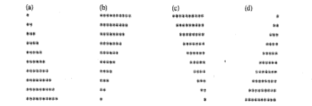

1. Pedir un nº y decir si es par o impar
2. Escribir un programa que haga lo mismo pero con switch
3. Modificar 1 para que siga pidiendo un nº hasta que el usuario introduzca una cadena que represente un nº. Usar isNaN( ) para comprobarlo
4. Usando astutamente los bucles for, while y do while. (Hay que usarlas todas al menos una vez). Crear las siguientes figuras usando *, espacios en blanco y saltos de línea
